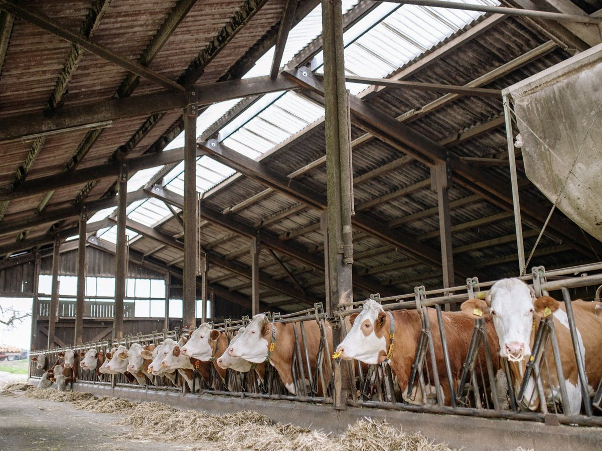
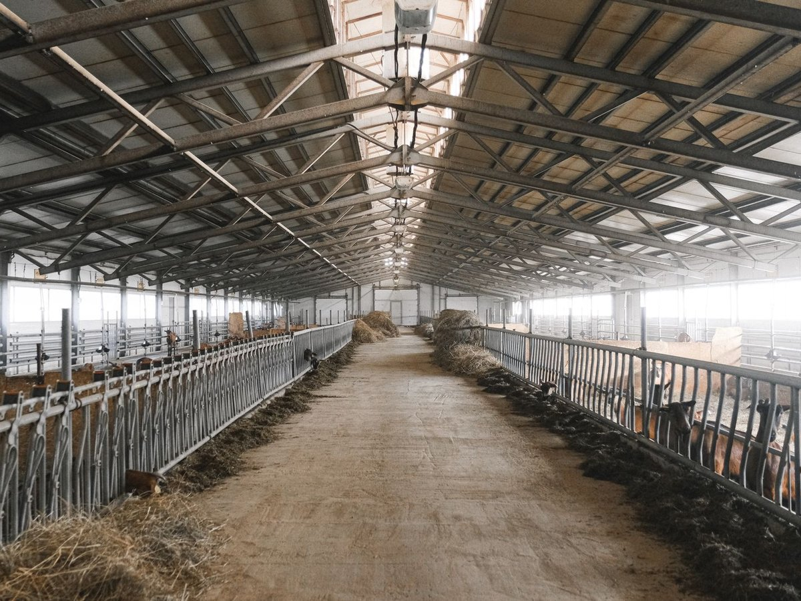

Produkte & Leistungen
Alles in Handarbeit, alles individuell, gefertigt in unserer Werkstatt am Möningerberg bei Freystadt in der Oberpfalz. Wenn ihr etwas braucht, das es so nicht gibt: fragt uns. Eure Ideen, unsere Lösungen.

Zäume drucklos auf den Pferdekopf
Unsere Spezialität: Zäume, die das empfindliche Genick und die Nervenbahnen am Pferdekopf entlasten. Das breite, gepolsterte Genickstück verteilt die Kräfte, statt sie auf einen Punkt zu bringen. Handgenäht aus hochwertigem Leder, mit Messingbeschlägen und auf Wunsch mit geflochtenem Stirnband.
Jeder Zaum wird individuell für euer Pferd gefertigt und angepasst.
Feine Details, ehrliche Handarbeit
Geflochtene Stirnbänder, Zierrosetten, sauber gesetzte Nähte: bei uns kommt das Stück erst aus der Werkstatt, wenn es passt und hält.


Hufglocken
Hufglocken aus fast unzerstörbarem, recyceltem Material: passgenau und schonend zur Fessel. Sie schützen Ballen und Hufeisen beim Reiten, auf der Weide und beim Transport. In verschiedenen Größen, auf Wunsch maßgefertigt.
Halsbänder & Lederwaren jeder Art für Tiere
Hundehalsbänder, Leinen mit Namensprägung, Geldbeutel, Gürtel, Brillenetuis und Sonderanfertigungen: wir fertigen Lederwaren aller Art, für Tier und Mensch. Sagt uns, was ihr braucht, wir setzen es um.


Diebstahlschutz für Sättel
Sättel sind wertvoll und leider beliebtes Diebesgut. Unser Diebstahlschutz sichert euren Sattel wirksam gegen Langfinger, im Stall und unterwegs. Sprecht uns an, wir beraten euch zur passenden Lösung.
Leder-Reparaturen
Der Lieblingsgeldbeutel reißt an der Naht, der Zaum ist gerissen, das Halfter durchgescheuert? Bevor ihr etwas wegwerft: bringt es zu uns. Wir reparieren Lederwaren fachgerecht, damit sie noch viele Jahre halten. Links die offene Naht, rechts das reparierte Stück.



Fliegengitter-Reparatur für Scheunen
Auch große Fliegengitter an Scheunen reparieren wir für euch – wir kommen dafür gerne bei euch vor Ort vorbei. Preis auf Anfrage.

Neu: Meta Gloss – Anti-Filz, Volumen & Glanz
Ab sofort führen wir Meta Gloss: eine Formel, die schon nach 1–2 Minuten Einwirkzeit sofort durchkämmbar macht, Mähne und Schweif zuverlässig entfilzt und dabei für seidigen Glanz sorgt. Gleichzeitig hält sie Urin, Kot und Schmutz ab und beugt neuen Knoten vor.
Einfach aufsprühen und einarbeiten, nicht direkt unter den Sattel. Erhältlich als 500-ml-Sprühflasche, als 250-ml-Gel für Mähne, Schweif und Fesseln und im praktischen 2.500-ml-Kanister zum Nachfüllen für den Stall.
- Spray, 500 ml15,95 €
- Gel, 250 ml17,95 €
- Kanister, 2.500 ml42,50 €

Pflegeprodukte
Gutes Pferd verdient gute Pflege. Bei uns bekommt ihr ausgewählte Pflegeprodukte für Fell, Mähne und Schweif, samt ehrlicher Beratung, was euer Pferd wirklich braucht.
- Spezialöl25,00 €
- Spezialcreme25,00 €
- Spezialpaste30,00 €
- Schweif- und Mähnenpflege22,00 €
- Pflegeöl17,00 €
Pferdecoaching Miriam
Ruhiger, sicherer Umgang mit dem Pferd ist die Basis für alles. Miriam unterstützt euch mit Erfahrung und Gefühl: beim täglichen Handling, bei schwierigen Situationen und bei der Gewöhnung an neues Equipment.
Erstberatung 150,- € (max. 2 Std.) · jede weitere angefangene Stunde 69,- € · Fahrtkosten 0,60 €/km. Hier kann ich euch weiterhelfen, die Grundthemen rauszufinden und einen individuellen Plan für euch und eure Liebsten zusammenzustellen.
Weitere Anwendungen können dazu gebucht werden, nach vorheriger Absprache.
Weiter lesen
Pferde begleiten mich seit meiner Kindheit. Aufgewachsen bin ich auf dem Möningerberg, wo meine Familie seit 1992 Pferde der reinen spanischen Rasse (P.R.E.) gezüchtet hat. Die artgerechte Herdenhaltung inmitten weitläufiger Koppeln hat mich früh gelehrt, Pferde in ihrem natürlichen Verhalten zu beobachten und ihre Körpersprache zu verstehen. Dabei wurde mir schon als Kind bewusst: Pferde und Menschen sprechen unterschiedliche Sprachen – und genau darin liegt oft der Schlüssel zu Missverständnissen.
Über viele Jahre durfte ich von den unterschiedlichsten Fachleuten lernen – von Hufschmieden, Tierärzten, Osteopathen, Physiotherapeuten, Pferdepflegern und Landwirten. Aus diesem wertvollen Erfahrungsschatz entwickelte ich eine eigene Herangehensweise, die das Verständnis zwischen Pferd und Mensch in den Mittelpunkt stellt. Denn nachhaltiger Erfolg entsteht nicht durch Druck, sondern durch gegenseitiges Vertrauen.
Auch meine reiterliche Ausbildung wurde von außergewöhnlichen Ausbildern geprägt, deren Wissen und Philosophie mich bis heute begleiten. In meiner Arbeit lege ich großen Wert darauf, die individuellen Stärken von Pferd und Reiter zu erkennen und gezielt weiterzuentwickeln. Mein Training basiert auf Leichtigkeit, Klarheit und positiver Bestätigung – ohne Zwang, Kraft oder unnötigen Stress.
Ein weiterer Meilenstein war die Gründung einer Sattelfirma durch meine Eltern im Jahr 1999, an der ich später als Mitinhaberin und Geschäftsführerin mitwirkte. In dieser Zeit entwickelte ich eine ganzheitliche Methode der Sattelanpassung, bei der nicht nur die Anatomie von Pferd und Reiter berücksichtigt wird, sondern auch Faktoren wie Ausbildungsstand, Muskulatur, Training und Alter. Dieses Wissen durfte ich über viele Jahre erfolgreich anwenden und an Fachhändler und Vertriebspartner weitergeben.
Meine Arbeit wird durch zahlreiche Weiterbildungen ergänzt, darunter Kenntnisse in der APM am Pferd, chinesischer Massage, Dorn-Therapie für Mensch und Pferd, der Anwendung ätherischer Öle sowie eine zertifizierte Ausbildung zur HypnoPractitioner.
Meine Philosophie
Jedes Pferd und jeder Mensch ist einzigartig. Deshalb gibt es bei mir keine Standardlösungen, sondern individuelle, ehrliche und praxisnahe Beratung. Mein Ziel ist es, eine vertrauensvolle Verbindung zwischen Pferd und Reiter zu schaffen – mit Verständnis statt Druck und mit Lösungen, die langfristig funktionieren.
Meine Grundsätze sind dabei klar:
- Ehrliche Beratung statt leere Versprechen.
- Kein Zwang, keine Manipulation, kein Druck.
- Keine Kompromisse auf Kosten von Pferd oder Mensch.
- Nachhaltige Lösungen, die beide als Team stärken.
Wenn Sie sich eine einfühlsame, fachlich fundierte Begleitung wünschen, bei der das Wohl von Pferd und Mensch gleichermaßen im Mittelpunkt steht, freue ich mich darauf, Sie und Ihr Pferd kennenzulernen.